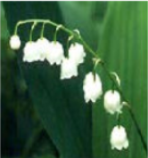
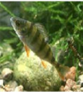
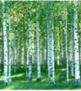
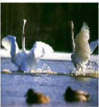

|


|
Một cuộc bầu chọn thập kỷ 80 cho thấy thiên nga, gấu, cá pecca, cây buló, hoa lan chuông và đá granite là những biểu tượng thể hiện quyển năng, truyền thống của đất nước Bắc Âu.1. Thiên nga
Thiên nga có lẽ đã được coi là biểu tượng của Phần Lan từ thuở xa
xưa. Ở những bức phác hoạ trên đá có niên đại hàng nghìn năm ở hồ
Onega, thiên nga đã được thể hiện như một sự tích kỳ bi. Ngoài ra,
hình ảnh chú thiên nga trắng muốt bay trên nền trời xanh được liên hệ
với lá cờ của Phần Lan, có nền trắng với sọc xanh. Không chi thế,
thiên nga là con vật phổ biến nhất được đưa vào các clip quảng cáo,
và là dấu hiệu đảm bảo hàng hoá không gây nhiễm cho môi trưởng
2. Chúa tể của miền hoang dã
Hiện ở Phần Lan có chừng 1.000 con gầu. Được coi là biểu tượng
tiêu biểu, nhưng người Phần Lan đôi khi không cảm thấy thoải mái với
con vật này. Lý do là người thu thuế từ trước đến nay đưoc thể hiện
dưới hình ảnh con gấu với chiếc mũ lưởi trai và túi thu tiến to đùng.
3. Hoa lan chuông
Hoa lan chuỗng được biết đến là một loại thảo dược, đông thời cũng
chứa chất đốc chết người. Hoa nở rô vào tháng 6 với mùi hương tỉnh
4. Cây bulô
Thế kỷ 19, cây bulo được lãng mạn hoá và đi vào văn chương khá
nhiều. Truyện cổ tích Cây bulô và ngôi sao của Zacharias Topelius kể
về hai đứa trẻ bị lạc. Sau nhiều ngày tìm kiếm, chúng trở về được ngôi
nhà yêu dấu nhờ nhận ra cây bulô quen thuộc trước sân. Ngày nay,
hình ảnh cô gái mặc trang phục truyền thống đựa vào cây bulô được
coi là biểu tượng của Phần Lan, có tới hàng trăm thiệp mừng mang
hình ảnh tương tự. Thậm chỉ có một người đàn ông trẻ đã cầu hôn với
cô dâu tương lai bằng chiếc nhẫn làm từ vỏ cây bulô.
5. Cá pecca
Thế kỷ 19, cây bulo được lãng mạn hoá và đi vào văn chương khá
nhiều. Truyện cổ tích Cây bulô và ngôi sao của Zacharias Topelius kể
về hai đứa trẻ bị lạc. Sau nhiều ngày tìm kiếm, chúng trở về được ngôi
nhà yêu dấu nhờ nhận ra cây bulô quen thuộc trước sân. Ngày nay,
hình ảnh cô gái mặc trang phục truyền thống đựa vào cây bulô được
coi là biểu tượng của Phần Lan, có tới hàng trăm thiệp mừng mang
hình ảnh tương tự. Thậm chỉ có một người đàn ông trẻ đã cầu hôn với
cô dâu tương lai bằng chiếc nhẫn làm từ vỏ cây bulô.
6. Đá granite
Granite được hình thành từ thạch anh, Fenspat và mica cùng một số
loại khoáng chất khác. Ở Phần Lan, ngoài việc xây dựng. granite
cũng được sử dụng cho điều khắc.
|


|